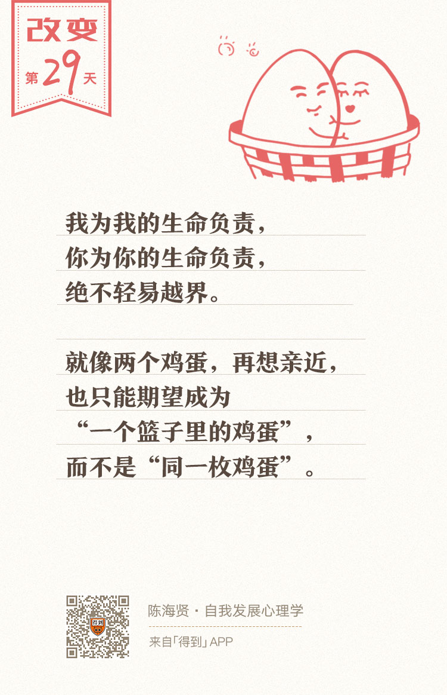

29丨都是我的错：如何突破关系中的自责？

欢迎来到《自我发展心理学》。
你好，我是陈海贤。
上节课，我们讲了一种人际关系中常见的责任混淆，叫“都是你的错”。今天这节课，我们来讲另一种常见的责任混淆，叫“都是我的错”。
如果说，“都是你的错”说的是我们要求别人为我们的感受负责，逃避我们在人际关系中的责任，那么“都是我的错”说的就是我们想要为别人的感受负责，承担我们不该承担的责任，生活在不必要的内疚当中。
只听上面这句话，你可能会觉得很难理解。怎么会有这么傻的人呢？用别人的问题增加自己的负担？
其实这种思维偏差很普遍，很可能只是你还没有意识到它。
我为我负责，你为你负责
记得有一次我去做一个心理咨询的沙龙，现场有个观众提问说：“我有一个朋友，最近一直不开心，我怀疑他得了抑郁症，我劝了他很久，他都不肯去看心理咨询，请问遇到这样的情况，我该怎么劝他呢？”
我说：“你已经做了你能做的事情了。你劝他去做咨询。他觉得不需要，这就是他的选择和决定，你也只能尊重他的选择。”
这个听众对这个答案不太满意，他说：“可是作为朋友，我看着他一天天消沉下去，我是很内疚的。如果你有这样的朋友，你自己又做不了什么，你不会内疚吗？”
我说：“会啊。可是我知道，内疚也是我自己的情绪，我需要自己处理好它。”
这个听众对他朋友的抑郁是有内疚的。如果他的朋友真的出了一些状况，也许这种内疚就会转化成自责，他就会想：“都是我的错”，是我没有好好劝他，他才不去做心理咨询的。
这里面既有一种同情，也有一个隐含的假设：觉得我很重要，甚至能够影响朋友的决定，能够为他的人生负起某种责任。
他的提问，让我想起心理学里有一个流浪猫效应。
从前有个善良的女士，她去散步的时候看到一只流浪猫，觉得野猫很可怜，就把它带回家好好喂养。
过了几天，她去散步，又遇到一只野猫，觉得那只猫也可怜，只好也带回了家。
第三只、第四只……附近的野猫好像都被她遇到了。很快，她家变成了猫窝，她所有的生活，都被猫占据了。
她一边在家养猫，一边怨气冲天，觉得自己的生活被这些猫给毁了。可要扔下这些野猫，又于心不忍。于是她就这样成了猫奴。
这个故事提醒我们：无论出于什么样的善心，助人者和求助者之间都应该有边界。在帮助别人的时候，要警惕我们的好心突破了边界，最终损坏了彼此的关系。
在心理咨询里，边界是一个挺重要的词，大意是说，我们需要承认和尊重彼此的独立性。
我为我的生命负责，你为你的生命负责，绝不轻易越界。
就像两个鸡蛋，都带着自己的壳，你再想跟别的鸡蛋亲近，也只能期望成为“一个篮子里的鸡蛋”，而不能期望成为“同一枚鸡蛋”。如果挨得太近，容易鸡飞蛋打。
人总是有亲近的渴望。因为这种亲近的渴望，我们总是希望能够承担别人的痛苦。
可是，有时候我们也需要承认自己的限度。不是我们的爱心不够，是我们的能力不够。边界就在那里，很客观，我们只能遵守。
家人的边界更难遵守
朋友之间的边界还是容易遵守的。更难遵守的，是家人之间的边界。
前段时间，我观摩了一个老师做的个案。
有一对夫妻，丈夫忙着挣钱，妻子在家养孩子。妻子怨丈夫没有顾家。丈夫觉得自己为家累死累活，妻子却不理解自己。两人经常会有争吵。
而他们的上初中的女儿呢，却有些抑郁了。
这是常见的家庭模式。夫妻都抱着“都是你的错”的思维，胶着了很久。
这时候，妻子又开始抱怨丈夫了，说他有一段时间，从公司回来就往家里床上一躺，一点不理家里的事，也不理她。
丈夫辩解说，不是的，那段时间他把腿扭伤了，所以才会这样。妻子不仅不知道照顾他，还要说他。
这时候，旁边的女儿插话了。她说：“我记得不是这样的。我那段时间考试没考好，心情不好，所以每次回家，都往床上一躺，爸爸看我这样，可能是学我，也就往床躺了。”
当时，整个咨询室的氛围，还在爸爸和妈妈的剑拔弩张中，甚至没人仔细听女儿说什么。
这时候，我的老师却停下来了。她问妈妈：“妈妈，你知道女儿在说什么吗？”
妈妈愣了一下，就说也许女儿是替爸爸解释之类，看得出来，她也并不觉得女儿的话有什么重要。
老师继续说：“妈妈，如果这样，你就对女儿的话太不敏感了。她其实是在说，不要怪爸爸了，要怪就都怪我，都是我的错！”
所有的人都安静了，气氛一下子变得悲伤而凝重。妈妈哭了出来。
过了一会，妈妈就说：“老公，我们不要这样了。我们要改。”
爸爸妈妈不能解决自己的矛盾，子女就会把他们的矛盾当做自己的问题。
- 他们有些会觉得，是自己不够乖巧父母才吵架，所以拼命表现得乖巧来讨好父母；
- 有些觉得父母吵架，是自己成绩不够好，所以拼命努力学习；
- 再长大一些，他们也许能分得清这是爸妈的问题，可他们心里还是会抱有这样的幻想：如果我再多做点什么，也许爸妈之间的矛盾就能解决了。
而这种内疚，有时候会成为一种思维习惯。在其他的人际关系中，每当别人生气的时候，他们也会觉得是自己做错了什么，才会这样。
“都是我的错”的根源
前段时间我遇到了一个来访者，是一个年轻有为的女士。她一直觉得对不起父母。
原因是，在她很小的时候，爸爸很想要一个男孩，妈妈不是很想要。于是就来问她的意见。她恶狠狠地说：“如果你们生个弟弟，我就掐死他”。
于是妈妈就听了她的话，没有要弟弟。后来，父母的关系一直都不太好，她觉得跟她的这个决定有关。
我问她：“你那时候多大啊？”
她说：“我四岁多吧。”
我说：“我觉得，与其说是你妈妈听了你的话，不如说是你帮你妈妈说出了她想说的话。你知道，一个和谐的家庭里，这么重要的事情，是不会让一个四岁多的孩子来决定的。你只是对你妈妈的想法比较敏感而已。”
她想了想说：“也许是吧。可我仍然觉得是我做得不够好，是我的错。要不是我初中的时候就到外地去上学，也许他们的关系不会那么差。他们就是从那时候开始吵架的。”
我说：“那我也不是很理解。如果你在家，也许你跟妈妈的关系会好一些，你跟爸爸的关系也会好一些。可是你怎么能够改变他们对彼此的感觉呢？夫妻关系，不就是他俩之间的关系吗？”
她说：“你是说，我改变不了他们的关系吗？”
我问她：“你觉得能吗？”
她想了想，叹了口气说：“也许真的不能。可是你这么说，我特别难过。原来我还可以想，是我自己做得不好，他们的关系才会不好。可是我很不想承认，这么重要的事，我居然什么都做不了。相比之下，我倒是宁愿觉得，他们的关系不好，只是因为我没做好。”
她是一个特别聪明的女士，她说出了“都是我的错”产生的根源。
为什么我们要把明明不是我们自己的责任，扛到自己的肩上呢？原因就在于，我们宁可忍受这样的内疚和自责，也不想承认，在一段这么重要的关系中，我们居然是无能为力的。
相比于内疚和自责，这种无力感更让人难以忍受。
你还记得我们前面所讲的“三角化”吗？“都是我的错”经常是被三角化的人会产生的典型心理。
他们没有办法解决别人的矛盾，就把别人的矛盾，变成了自己的问题，来告诉自己，我是有办法的，只是我没做好而已。
两种镜像思维的比较
说到这里，我想来比较一下“都是你的错”和“都是我的错”这两种很有意思的镜像思维。
“都是你的错”，它的攻击是向外的，指向别人的，所产生的情绪是愤怒。而“都是我的错”，它的攻击是向内的，指向自己的，所产生的情绪是内疚、自责和抑郁。
有时候，这样的组合是成对出现的。
比如，有些母亲会跟孩子说：“要不是你，我早就离婚了。”
这是“都是你的错”的一种形式，而孩子呢，会自然就认同妈妈的说法，他会想，都是因为我，妈妈才过得这么不好。这是“都是我的错”的一种形式。
当“都是你的错”和“都是我的错”形成了一种互补的关系，关系的一方常常会变得越来越愤怒，关系的另一方变得越来越抑郁。
虽然关系里的两个人都不舒服，却常常都无法改变。
这不仅出现在家庭里，在职场中，一个老板如果总是指责某个员工，而员工也觉得都是自己的错，慢慢的，他就会习惯做一个“背锅侠”。
在感情里，如果一方总是指责另一方，而另一方总是觉得都是自己的错，总有一天，这样的关系也会崩坏。
所以，现在让我们再回过头来思考一下边界的含义。
即使是最亲近的人，我们也需要承认，我们跟他是不同的人，有些困难，只能他自己去面对和解决，有些决定，只能他自己来做，无论他的决定在我们看来有多糟糕。
因为说到底，每个人都只能为自己的生活负责。
如果你总是把关系的错误归为自己，经常觉得内疚和自责，哪怕明明在关系中，你也受了委屈，那我也想提醒你：这不是你的错。
总结一下，这一讲，我们谈了另一种责任的混淆——“都是我的错”。我们讲了这种心理产生的根源，分析了它跟“都是你的错”的关系。
为了避免与“都是我的错”这种责任的混淆，我们应该划清跟别人的边界，“我为我的生命负责，你为你的生命负责”。
我们用了四节课的时间阐述了感觉的混淆和责任的混淆。下一讲，我们就来说一说，这种混淆会给我们造成什么后果。
我们下一讲见。
